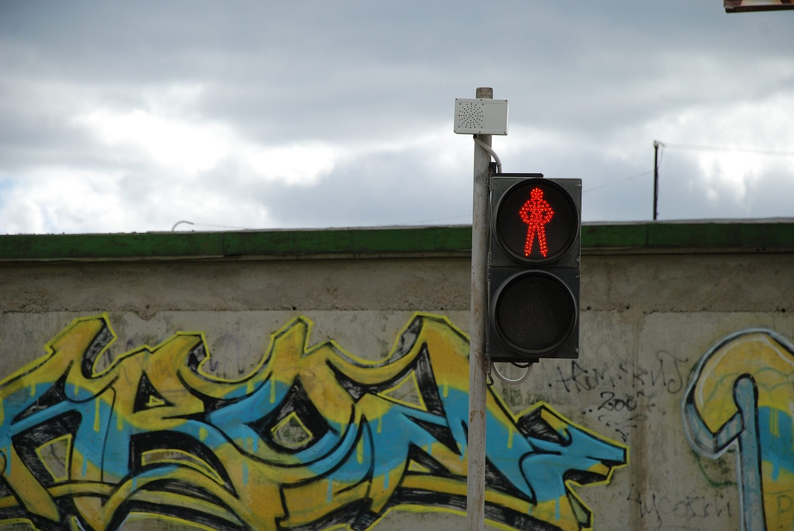
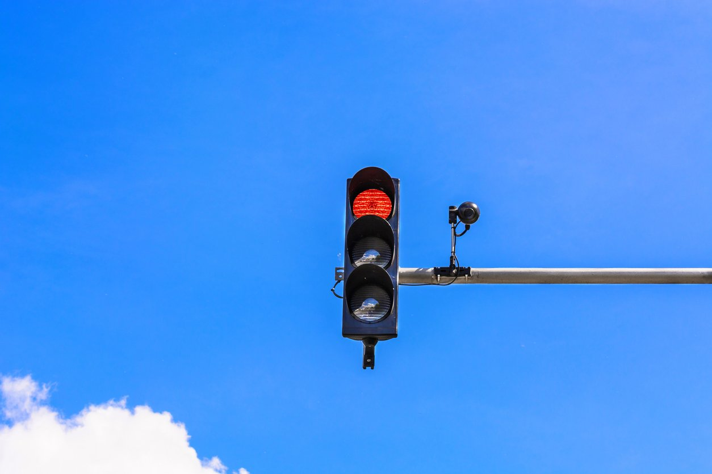
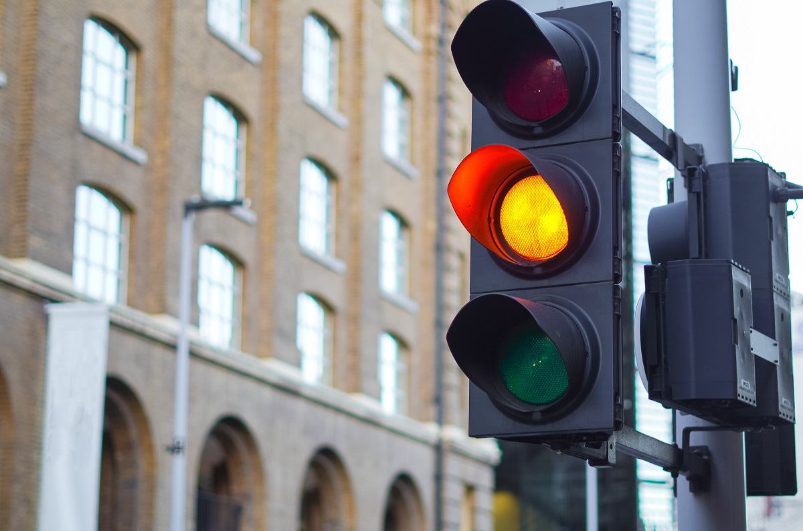
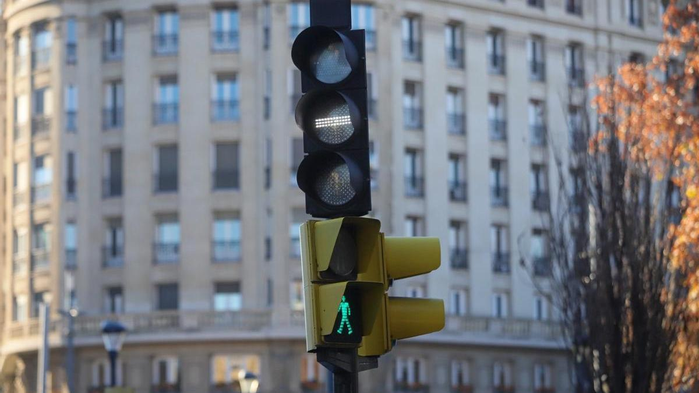
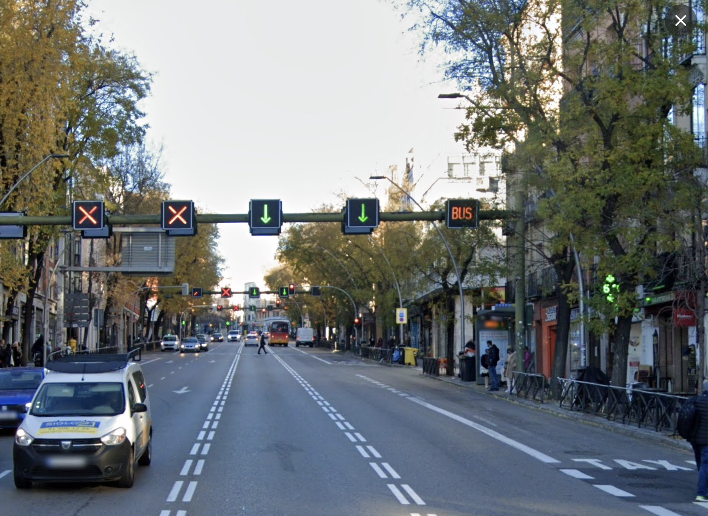

INVESTIGACIÓN
Diferentes tipos de semáforos
- Semáforo peatonal
- Semáforo con cámara
- Semáforo con intermitente amarillo
- Semáforo para tranvía.
- Semáforo de carril.
- Semáforo ámbar como reductor de velocidad.
1- Semáforo peatonal
Tiene dibujado en su interior la silueta de un peatón y tiene 2 colores: verde y rojo; y dos tipos de posiciones: fija e intermitente. La luz verde fija en forma de peatón en marcha indica a los peatones que pueden comenzar a atravesar la calzada. Luz roja fija en forma de peatón inmóvil indica que no pueden cruzar.
2- Semáforo con cámara
El sistema de cámaras actúa a través de dos fotografías: La primera se toma antes de que el vehículo llegue a la línea de detención cuando el semáforo está en rojo. La segunda, cuando se ha atravesado esta línea sin que el color haya cambiado a verde.
3- Semáforo con intermitente amarillo
Una luz amarilla intermitente, o dos luces amarillas alternativamente intermitentes, obligan a los conductores a extremar la precaución y, en su caso, ceder el paso. Además, no eximen del cumplimiento de otras señales que obliguen a detenerse.
4- Semáforo para tranvía.
Línea horizontal: prohibido el paso. Línea vertical: permite el paso de frente. Línea oblicua hacia la izquierda o derecha: permite el paso a izquierda o derecha.
5- Semáforo de carril.
Tiene una flecha verde que da paso, una flecha amarilla o blanca oblicua mirando hacia abajo que indica que hay que cambiar de carril, o una cruz roja que indica que no se puede circular por ese carril. Este tipo de semáforos es la clave de los carriles reversibles y del uso de carriles en túneles.
